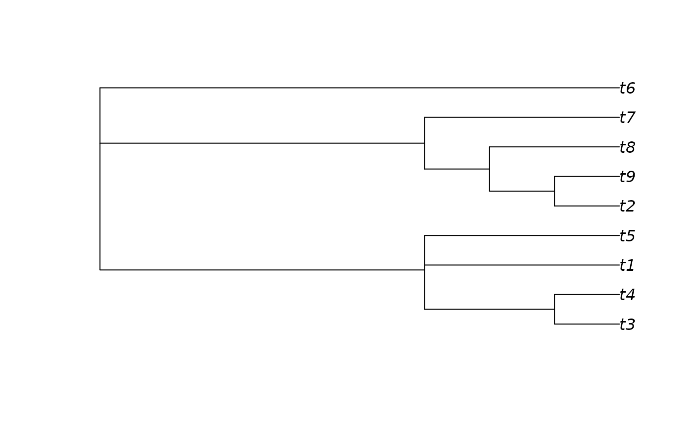

Colour value with which to display node support.
SupportColour( support, show1 = TRUE, scale = rev(diverge_hcl(101, h = c(260, 0), c = 100, l = c(50, 90), power = 1)), outOfRange = "red" ) SupportColor( support, show1 = TRUE, scale = rev(diverge_hcl(101, h = c(260, 0), c = 100, l = c(50, 90), power = 1)), outOfRange = "red" )
| support | A numeric vector of values in the range 0--1. |
|---|---|
| show1 | Logical specifying whether to display values of 1.
A transparent white will be returned if |
| scale | 101-element vector listing colours in sequence. Defaults to a diverging HCL scale. |
| outOfRange | Colour to use if results are outside the range 0--1. |
SupportColour() returns the appropriate value from scale,
or outOfRange if a value is outwith the valid range.
Use in conjunction with LabelSplits() to colour split labels,
possibly calculated using SplitFrequency().
SupportColour((-1):4 / 4, show1 = FALSE)#> [1] "red" "#D33F6A" "#E495A5" "#E2E2E2" "#9DA8E2" "#ffffff00"# An example forest of 100 trees, some identical forest <- as.phylo(c(1, rep(10, 79), rep(100, 15), rep(1000, 5)), nTip = 9) # Generate an 80% consensus tree cons <- ape::consensus(forest, p = 0.8) plot(cons)splitFreqs <- SplitFrequency(cons, forest) LabelSplits(cons, splitFreqs, unit = '%', col = SupportColor(splitFreqs / 100), frame = 'none', pos = 3L)